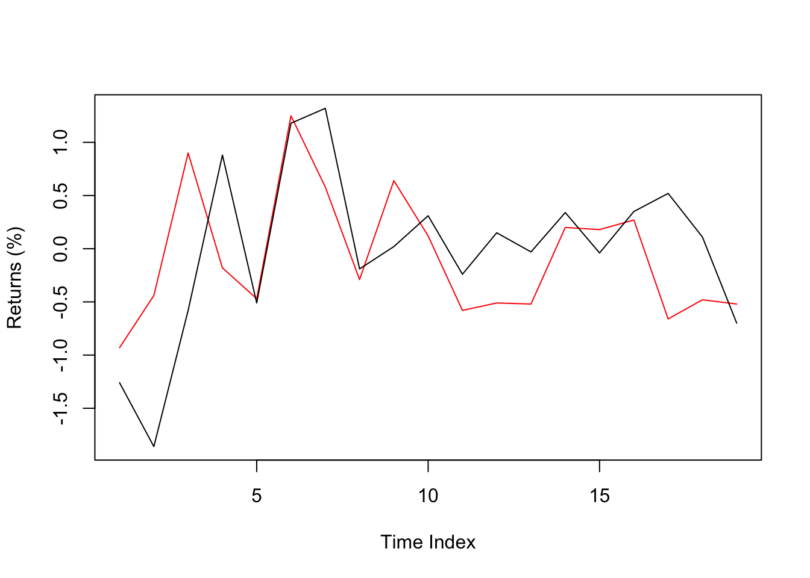
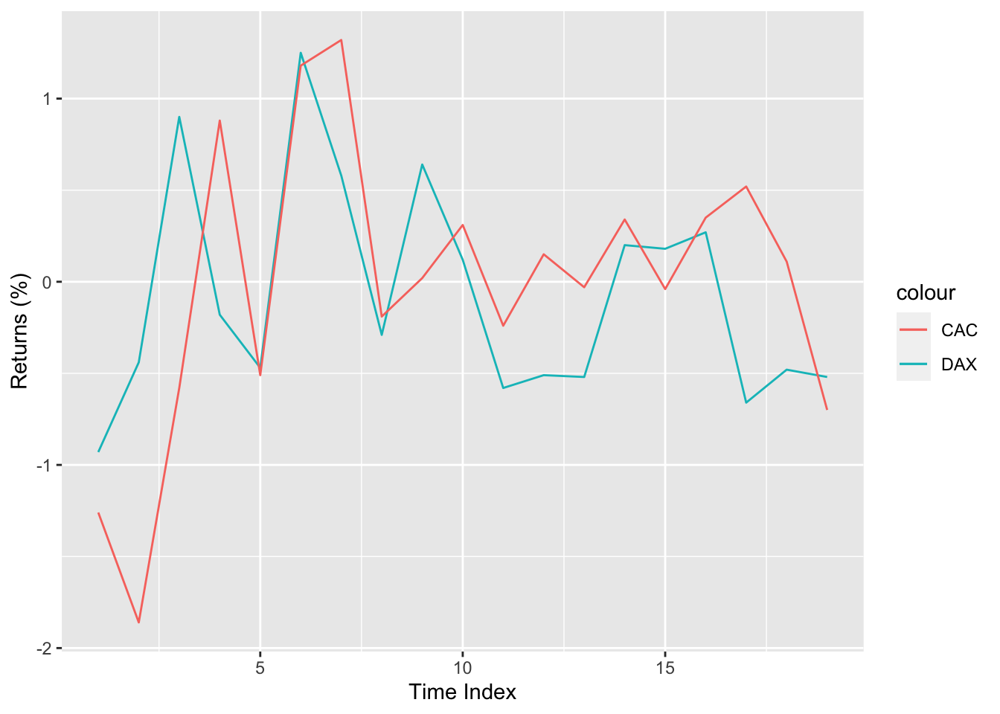

x <- 522
x[1] 522This document is more step by step. It was created in 2018, therefore there is no information about Base R pipes (“|>”).
R is a scripting language1 with the main purpose of conducting tasks related to statistics, mainly by academics for the academics. Though, these days things got slightly out of hand and R became one of the most popular languages especially in the field of “data science”. The biggest advantage of R is the huge package (R equivalent of “There is an app for that”) and developer support.
Other main points to know about R are as follows.
A list of resources with links and explanations will be given at the end of this document.
This part lays out the very basics of R. Content is mainly about data types (numeric, character and logical), object types (vectors, matrices, lists and ) and basic operations. Before starting check the following tips that can be useful.
# for each line. There is no block comment like /* */ used in C, but there are block commment keyboard shortcuts for most editors.? before the object. For example, try ?mean to get information about the function mean.##Value Assignment, Vectors and Data Types
Values can be defined on variables with the assignment operator <- or =.3 For example let’s assign a numeric value to the variable x.4 You don’t need to define a variable, assigning a value is enough.
x <- 522
x[1] 522Your can also assign character strings,
x <- "BDA503"
x[1] "BDA503"and logical. (There is also a factor type, but it is skipped for now.)
x <- FALSE
x[1] FALSEIn this part, object types such as vector, matrix, data.frame and list are explained. Although this is not a complete list (e.g. array is another object type) and object is a more general concept, these object types are mostly sufficient at beginner and intermediate levels.
Most basic data structure is a vector. You can create a simple vector with c() (combine).
x <- c(5,2,2)
x[1] 5 2 2You can change any value in a vector by defining its index. Index starts with 1.
x[2] <- 7
x[1] 5 7 2You can omit a value by putting a negative index.
x[-2] <- 0
x[1] 0 7 0R handles out of bounds index values and returns NA.
x[5] <- 10
x[1] 0 7 0 NA 10You can define multiple index values and define rules to choose the index.
x2 <- 10:19 #This is a special representation that generates a vector from a (10) to b (19).
x2[c(1,3,7)] #Return 1st, 3rd and 7th values.[1] 10 12 16x2[(1:3)] #Return 1st to 3rd values.[1] 10 11 12x2[x2>15] #Return the index values where x2 > 15[1] 16 17 18 19x2>15 [1] FALSE FALSE FALSE FALSE FALSE FALSE TRUE TRUE TRUE TRUEYou can give names instead of index values.
x3<-c(1,2,3)
names(x3)<-c("a1","b2","c3")
x3a1 b2 c3
1 2 3 x3["b2"]b2
2 If you try to combine different data types, R will transform them to characters or numeric.
c(5,FALSE)[1] 5 0c(5,FALSE,"BDA503")[1] "5" "FALSE" "BDA503"Mathematical operations can be easily done with vectors.
vec1 <- 1:5 # This is a special representation of consecutive numbers.
vec1[1] 1 2 3 4 5vec2 <- vec1 * 2
vec2[1] 2 4 6 8 10vec1 + vec2[1] 3 6 9 12 15Vectors need not to be of equal size (though recommended).
vec1 <- 1:6
vec2 <- 3:5
vec1 + vec2[1] 4 6 8 7 9 11Matrix is more like a stylized vector in a rectangular (matrix) format with some special functions.
mat1<-matrix(1:9, ncol=3, nrow=3)
mat1 [,1] [,2] [,3]
[1,] 1 4 7
[2,] 2 5 8
[3,] 3 6 9You can manipulate a value of a matrix by giving its index value.
mat1[2,2] <- -10
mat1 [,1] [,2] [,3]
[1,] 1 4 7
[2,] 2 -10 8
[3,] 3 6 9Here are some basic matrix operations.
mat2 <- matrix(c(0,4,1,2,0,0,0,0,1),ncol=3)
mat2 [,1] [,2] [,3]
[1,] 0 2 0
[2,] 4 0 0
[3,] 1 0 1t(mat2) # Transpose of a matrix [,1] [,2] [,3]
[1,] 0 4 1
[2,] 2 0 0
[3,] 0 0 1solve(mat2) # Inverse of a matrix [,1] [,2] [,3]
[1,] 0.0 0.25 0
[2,] 0.5 0.00 0
[3,] 0.0 -0.25 1det(mat2) # Determinant value of a matrix[1] -8dim(mat2) # Dimensions of a matrix[1] 3 3nrow(mat2) # Number of rows of a matrix[1] 3ncol(mat2) # Number of columns of a matrix[1] 3diag(mat2) # Diagonal values of a matrix[1] 0 0 1eigen(mat2) # Eigenvalues and eigenvectors of a matrixeigen() decomposition
$values
[1] 2.828427 -2.828427 1.000000
$vectors
[,1] [,2] [,3]
[1,] 0.5505553 0.5708950 0
[2,] 0.7786028 -0.8073674 0
[3,] 0.3011087 -0.1491200 1mat1 %*% mat2 # Matrix multiplication [,1] [,2] [,3]
[1,] 23 2 7
[2,] -32 4 8
[3,] 33 6 9You can also do vector operations with matrices.
mat1 + mat2 [,1] [,2] [,3]
[1,] 1 6 7
[2,] 6 -10 8
[3,] 4 6 10mat1 - mat2 [,1] [,2] [,3]
[1,] 1 2 7
[2,] -2 -10 8
[3,] 2 6 8mat1 / mat2 [,1] [,2] [,3]
[1,] Inf 2 Inf
[2,] 0.5 -Inf Inf
[3,] 3.0 Inf 9mat1 * mat2 [,1] [,2] [,3]
[1,] 0 8 0
[2,] 8 0 0
[3,] 3 0 9You can do operations with matrices and vectors together. Then matrix is treated like a vector with the index column order (i.e. starts from top to bottom, then goes to next column).
mat3 <- matrix(1:9,ncol=3)
mat3 [,1] [,2] [,3]
[1,] 1 4 7
[2,] 2 5 8
[3,] 3 6 9vec <- c(0,1,0)
mat3 + vec [,1] [,2] [,3]
[1,] 1 4 7
[2,] 3 6 9
[3,] 3 6 9mat3 * vec [,1] [,2] [,3]
[1,] 0 0 0
[2,] 2 5 8
[3,] 0 0 0You can name rows and columns of a matrix.
rownames(mat3) <- c("a","b","c")
colnames(mat3) <- c("y1","y2","y3")
mat3 y1 y2 y3
a 1 4 7
b 2 5 8
c 3 6 9Data frame is the most useful object type. Unlike matrix and vector you can define different data types for different columns.
df1 <- data.frame(some_numbers=1:3,some_names=c("Blood","Sweat","Tears"),some_logical=c(TRUE,FALSE,TRUE))
df1 some_numbers some_names some_logical
1 1 Blood TRUE
2 2 Sweat FALSE
3 3 Tears TRUEYou can see the details of an object (in this case the data frame) using str() function.
str(df1)'data.frame': 3 obs. of 3 variables:
$ some_numbers: int 1 2 3
$ some_names : chr "Blood" "Sweat" "Tears"
$ some_logical: logi TRUE FALSE TRUEYou easily can do operations on a single column using $.
df1$some_numbers[1] 1 2 3df1$some_names[1] "Blood" "Sweat" "Tears"df1$some_logical[1] TRUE FALSE TRUEdf1$some_numbers <- df1$some_numbers^2
df1 some_numbers some_names some_logical
1 1 Blood TRUE
2 4 Sweat FALSE
3 9 Tears TRUEThere are many example data sets in base R and packages in data.frame format. For instance, EuStockMarkets contains the closing prices of DAX (Germany), SMI (Switzerland), CAC (French), FTSE (UK) stock market indices.
head(EuStockMarkets) #head() function shows the first rows of a data frame. DAX SMI CAC FTSE
[1,] 1628.75 1678.1 1772.8 2443.6
[2,] 1613.63 1688.5 1750.5 2460.2
[3,] 1606.51 1678.6 1718.0 2448.2
[4,] 1621.04 1684.1 1708.1 2470.4
[5,] 1618.16 1686.6 1723.1 2484.7
[6,] 1610.61 1671.6 1714.3 2466.8Lists can hold many objects (including lists).
list1 <- list(df1,mat3,vec2)
list1[[1]]
some_numbers some_names some_logical
1 1 Blood TRUE
2 4 Sweat FALSE
3 9 Tears TRUE
[[2]]
y1 y2 y3
a 1 4 7
b 2 5 8
c 3 6 9
[[3]]
[1] 3 4 5list1[[1]] some_numbers some_names some_logical
1 1 Blood TRUE
2 4 Sweat FALSE
3 9 Tears TRUEYou can name the objects and call them with the names if you like.
list1 <- list(some_df=df1,some_mat=mat3,vec2)
list1$some_df
some_numbers some_names some_logical
1 1 Blood TRUE
2 4 Sweat FALSE
3 9 Tears TRUE
$some_mat
y1 y2 y3
a 1 4 7
b 2 5 8
c 3 6 9
[[3]]
[1] 3 4 5list1$some_df some_numbers some_names some_logical
1 1 Blood TRUE
2 4 Sweat FALSE
3 9 Tears TRUELists are frequently used in functions as parameter set holders and for other purposes.
Remember, you can always look for help for a function using ?function_name or help(function_name). This is not an exhaustive list, there are many other fantastic functions in base R.
rep(x=5,times=10) #Repeat a value or a vector [1] 5 5 5 5 5 5 5 5 5 5seq(from=5,to=10,length.out=11) #Create a sequence with the given number of equidistant elements [1] 5.0 5.5 6.0 6.5 7.0 7.5 8.0 8.5 9.0 9.5 10.0seq(from=5,to=10,by=0.25) #Create a sequence with the given increment value [1] 5.00 5.25 5.50 5.75 6.00 6.25 6.50 6.75 7.00 7.25 7.50 7.75
[13] 8.00 8.25 8.50 8.75 9.00 9.25 9.50 9.75 10.00vec1 <- sample(x=1:10,size=10,replace=FALSE) #Pick 10 numbers randomly without replacement (Note: Your results might differ from this document due to randomness.)
vec1 [1] 8 7 3 5 4 1 2 9 10 6print(vec1/2) #Print the outputs of an object. Useful for later. [1] 4.0 3.5 1.5 2.5 2.0 0.5 1.0 4.5 5.0 3.0rev(vec1) #Reverse of a vector [1] 6 10 9 2 1 4 5 3 7 8length(vec1) #Number of elements of a vector[1] 10vec1 %% 2 #Mod 2 of the elements in the vector [1] 0 1 1 1 0 1 0 1 0 0min(vec1) #Minimum value of the vector[1] 1max(vec1) #Maximum value of the vector[1] 10factorial(vec1) #Factorial value of all elements of a vector (You can use a single value as well) [1] 40320 5040 6 120 24 1 2 362880 3628800
[10] 720sum(vec1) #Sum of all the values in the vector[1] 55cumsum(vec1) #Cumulative sum of all the values in the vector [1] 8 15 18 23 27 28 30 39 49 55prod(vec1) #Product (multiplication) of all the values in the vector[1] 3628800cumprod(vec1) #Cumulative product of all the values in the vector [1] 8 56 168 840 3360 3360 6720 60480 604800
[10] 3628800log(vec1) #Natural logarithm of the values in the vector [1] 2.0794415 1.9459101 1.0986123 1.6094379 1.3862944 0.0000000 0.6931472
[8] 2.1972246 2.3025851 1.7917595log(vec1,base=2) #Logarithm of base 2. [1] 3.000000 2.807355 1.584963 2.321928 2.000000 0.000000 1.000000 3.169925
[9] 3.321928 2.584963exp(vec1) #Exponential values of a vector (e=2.71...) [1] 2980.957987 1096.633158 20.085537 148.413159 54.598150
[6] 2.718282 7.389056 8103.083928 22026.465795 403.428793vec1^2 #Power of 2 [1] 64 49 9 25 16 1 4 81 100 36sqrt(vec1) #Square root [1] 2.828427 2.645751 1.732051 2.236068 2.000000 1.000000 1.414214 3.000000
[9] 3.162278 2.449490vecx <- c(1,3,5,7) #Define another vector
vecy <- c(8,6,4,2) #Define another vector
pmax(vecx,vecy) #Maximum of each corresponding element of two (or more) vectors[1] 8 6 5 7pmin(vecx,vecy) #Minimum of each corresponding element of two (or more) vectors[1] 1 3 4 2max(vecx,vecy) #Difference between max and pmax[1] 8vec1 <- c(-1,0.5,-1.2,4/3)
vec1[1] -1.000000 0.500000 -1.200000 1.333333abs(vec1) #Absolute value[1] 1.000000 0.500000 1.200000 1.333333round(vec1,digits = 1) #Round a value to a number of digits[1] -1.0 0.5 -1.2 1.3floor(vec1) #Round down value of vector[1] -1 0 -2 1ceiling(vec1) #Round up value of vector[1] -1 1 -1 2round(0.5) #Interesting case about rounding. Compare with below.[1] 0round(1.5) #Interesting case about rounding. Compare with above.[1] 2vec_table<-sample(letters[1:5],20,replace=TRUE) #Another vector for frequency tables. letters is a predefined object in R.
vec_table [1] "c" "b" "a" "e" "c" "c" "d" "c" "c" "b" "e" "c" "d" "e" "a" "e" "b" "b" "d"
[20] "b"table(vec_table) #Easily do a frequency table.vec_table
a b c d e
2 5 6 3 4 vec2 <- sample(x=11:20,size=10,replace=FALSE)
vec2 [1] 12 16 13 14 17 19 18 15 20 11sort(vec2) #Sort the values in the vector [1] 11 12 13 14 15 16 17 18 19 20rank(vec2) #Rank of the values in the vector [1] 2 6 3 4 7 9 8 5 10 1order(vec2) #Returns the index values (ascending) of the sorted vector. [1] 10 1 3 4 8 2 5 7 6 9order(vec2,decreasing=TRUE) #Returns the index values (descending) of the sorted vector. [1] 9 6 7 5 2 8 4 3 1 10These operators return TRUE or FALSE values. They are especially useful to
vec1 <- 1:10
vec1 [1] 1 2 3 4 5 6 7 8 9 10vec1 > 5 #Logical (TRUE/FALSE) result of elements greater than 5. [1] FALSE FALSE FALSE FALSE FALSE TRUE TRUE TRUE TRUE TRUEvec1[vec1 > 5][1] 6 7 8 9 10vec1 >= 5 #Logical result of elements greater than or equal to 5. [1] FALSE FALSE FALSE FALSE TRUE TRUE TRUE TRUE TRUE TRUEvec1[vec1 >= 5][1] 5 6 7 8 9 10vec1 < 5 #Logical result of elements less than 5. [1] TRUE TRUE TRUE TRUE FALSE FALSE FALSE FALSE FALSE FALSEvec1 <= 5 #Logical result of elements less than or equal to 5. [1] TRUE TRUE TRUE TRUE TRUE FALSE FALSE FALSE FALSE FALSEvec1 > 5 & vec1 < 9 #and (&) operator [1] FALSE FALSE FALSE FALSE FALSE TRUE TRUE TRUE FALSE FALSEvec1[vec1 > 5 & vec1 < 9][1] 6 7 8vec1 < 5 | vec1 > 9 #or (|) operator [1] TRUE TRUE TRUE TRUE FALSE FALSE FALSE FALSE FALSE TRUEvec1[vec1 < 5 | vec1 > 9][1] 1 2 3 4 10You can also do element by element comparisons of two vectors.
eu_df<- data.frame(EuStockMarkets[1:20,]) #Take the first 20 rows of the stock market index data
eu_df_returns <- data.frame(DAX=100*(round(eu_df$DAX[-1]/eu_df$DAX[-20],4)-1),
CAC=100*(round(eu_df$CAC[-1]/eu_df$CAC[-20],4)-1)) #Calculate the index percentage returns
eu_df_returns$DAX_or_CAC <- eu_df_returns$DAX >= eu_df_returns$CAC #If the return of DAX is larger than or equal to CAC return TRUE
eu_df_returns DAX CAC DAX_or_CAC
1 -0.93 -1.26 TRUE
2 -0.44 -1.86 TRUE
3 0.90 -0.58 TRUE
4 -0.18 0.88 FALSE
5 -0.47 -0.51 TRUE
6 1.25 1.18 TRUE
7 0.58 1.32 FALSE
8 -0.29 -0.19 FALSE
9 0.64 0.02 TRUE
10 0.12 0.31 FALSE
11 -0.58 -0.24 FALSE
12 -0.51 0.15 FALSE
13 -0.52 -0.03 FALSE
14 0.20 0.34 FALSE
15 0.18 -0.04 TRUE
16 0.27 0.35 FALSE
17 -0.66 0.52 FALSE
18 -0.48 0.11 FALSE
19 -0.52 -0.70 TRUESome functions are predefined to facilitate statistics calculations.
vec1 <- sample(1:20,50,replace=TRUE) #Sample 50 numbers from values between 1 to 20
vec1 [1] 1 7 6 20 19 13 1 14 15 18 1 3 2 8 14 8 19 7 6 5 14 11 4 19 10
[26] 2 5 10 12 12 6 8 10 6 7 3 1 10 1 19 16 13 14 1 8 9 3 4 8 6mean(vec1) #Mean[1] 8.78median(vec1) #Median[1] 8var(vec1) #Variance[1] 32.1751sd(vec1) #Standard deviation[1] 5.67231quantile(vec1) #Quantile values 0% 25% 50% 75% 100%
1.00 4.25 8.00 13.00 20.00 quantile(vec1,0.65) #Quantile value of a specific percentage65%
10 summary(vec1) #An aggregate summary Min. 1st Qu. Median Mean 3rd Qu. Max.
1.00 4.25 8.00 8.78 13.00 20.00 cor(matrix(sample(1:20,50,replace=TRUE),ncol=5)) #Correlation matrix [,1] [,2] [,3] [,4] [,5]
[1,] 1.0000000 -0.2559994 0.14870542 0.3206040 0.64079831
[2,] -0.2559994 1.0000000 -0.11294628 -0.3952173 0.21003398
[3,] 0.1487054 -0.1129463 1.00000000 -0.2477775 -0.07265325
[4,] 0.3206040 -0.3952173 -0.24777751 1.0000000 -0.21931239
[5,] 0.6407983 0.2100340 -0.07265325 -0.2193124 1.00000000cov(matrix(sample(1:20,50,replace=TRUE),ncol=5)) #Covariance matrix [,1] [,2] [,3] [,4] [,5]
[1,] 11.166667 -4.611111 5.555556 -9.444444 14.000000
[2,] -4.611111 24.455556 16.400000 22.666667 -18.600000
[3,] 5.555556 16.400000 47.955556 5.777778 6.066667
[4,] -9.444444 22.666667 5.777778 32.444444 -27.333333
[5,] 14.000000 -18.600000 6.066667 -27.333333 39.955556There are also random number generators and functions related with densities and cdf’s of different distributions. Here are the functions for normal distribution.
rnorm(5,mean=0,sd=1) #Generate 5 normally distributed random numbers with mean 0 and sd 1[1] -0.2539027 -0.2149014 0.4441155 1.1664932 0.6277736dnorm(x=0,mean=0,sd=1) #Density value of a point in a normal distribution with mean 0 and sd 1[1] 0.3989423pnorm(q=1.96,mean=0,sd=1) #Cumulative distribution value of a point in a normal distribution with mean 0 and sd 1[1] 0.9750021qnorm(p=0.975,mean=0,sd=1) #Quantile value of a point in a normal distribution with mean 0 and sd 1[1] 1.959964Other distributions include dpois (poisson), dbinom (binomial), dgeom (geometric), dunif (uniform), dgamma (gamma), dexp (exponential), dchisq (chi-squared), dt (t distribution), df (F distribution), dcauchy (cauchy),dnbinom (negative binomial), dhyper (hypergeometric), dlnorm (lognormal), dbeta (beta), dlogis (logistic) and dweibull (weibull) with the same format (e.g. rpois generates random poisson numbers).
Tip: For reproducibility use set.seed. It will set the randomness seed to a value and random number generation will be the same for (almost) everyone.
set.seed(522)
rnorm(10) [1] 0.52028245 0.75354770 -0.80932517 -0.42112173 0.08458416 1.80153605
[7] 1.25071091 -0.31097287 1.16377544 -0.67728655Let’s run it a second time by resetting the seed. The output will be the same.
set.seed(522)
rnorm(10) [1] 0.52028245 0.75354770 -0.80932517 -0.42112173 0.08458416 1.80153605
[7] 1.25071091 -0.31097287 1.16377544 -0.67728655See, the same output happens when randomness seed is restarted at the same value.
You can convert numeric to character, logical to numeric using functions starting with as. and check the type of the object with is. or typeof().
vec1<-c(1,2,3,4)
is.numeric(vec1) #Is the vector numeric?[1] TRUEas.character(vec1) #Make the vector character?[1] "1" "2" "3" "4"typeof(vec1) #What is the type?[1] "double"vec2<-c("a","b","c","d")
typeof(vec2)[1] "character"as.numeric(vec2) # oopsWarning: NAs introduced by coercion[1] NA NA NA NAvec3<-c(TRUE,FALSE,TRUE,FALSE)
is.logical(vec3)[1] TRUEas.numeric(vec3)[1] 1 0 1 0as.character(vec3)[1] "TRUE" "FALSE" "TRUE" "FALSE"vec3*1 #Convert to numeric with multiplication[1] 1 0 1 0df1<-data.frame(a=c(1,2,3),b=c(4,5,6),c=c(7,8,9))
as.matrix(df1) #Convert to matrix a b c
[1,] 1 4 7
[2,] 2 5 8
[3,] 3 6 9mat1 <- matrix(1:9,ncol=3)
as.data.frame(mat1) V1 V2 V3
1 1 4 7
2 2 5 8
3 3 6 9strvec1<-c("BDA503","FE511","IE422")
grep("ETM",strvec1) #Index values of character strings including FEinteger(0)grepl("ETM",strvec1) #TRUE FALSE statements of character strings including FE[1] FALSE FALSE FALSEgsub("ETM","IE",strvec1) #Replacing strings[1] "BDA503" "FE511" "IE422" nchar(strvec1) #Return number of characters in string[1] 6 5 5substr(strvec1,start=1,stop=2) #Trim the string from start to stop[1] "BD" "FE" "IE"paste("ETM","522",sep="-") #Concatenate two strings with a separator.[1] "ETM-522"paste0("ETM","522") #Concatenate two strings without a separator, equivalent of paste(.,sep="").[1] "ETM522"paste(strvec1,collapse="+") #Concatenate elements of a vector with a collapse character.[1] "BDA503+FE511+IE422"Conditionals are straightforward. If a statement returns TRUE, then the code chunk defined by the brackets are executed.
course_name <- "BDA503" #Define the course name.
if(course_name=="BDA503"){ #If the course name is FE522.
print("Correct course.")
}[1] "Correct course."It is possible to execute some other code chunk if the statement is FALSE with else and add other conditionals using else if.
course_name <- "FE511" #Define the course name.
if(course_name=="BDA503"){ #If the course name is FE522.
print("Correct course.")
}else if(grepl("ETM",course_name)){ #If the course name include FE but it is not FE522.
print("Wrong course but close.")
}else{ #If none of the above
print("Wrong course.")
}[1] "Wrong course."if conditional statements accept only one value. If you want to check for all elements in a vector use ifelse().
course_name<-c("BDA503","FE511","IE422")
ifelse(course_name=="BDA503","Correct Course","Wrong Course")[1] "Correct Course" "Wrong Course" "Wrong Course" Although you are warned that R works slowly with loops (especially loops within loops), it is usually inevitable to use the loops.
For loops consist of a loop variable and a scope.
val<-2
for(i in 1:3){ #Define the loop variable and scope
print(val^i)
}[1] 2
[1] 4
[1] 8Scope does not need to be numbers. For returns whatever in the scope in index order
for(i in c("BDA503","FE511","IE422")){
print(i)
}[1] "BDA503"
[1] "FE511"
[1] "IE422"While is a less frequently used loop type. It repeats the code while a condition is met. It first checks the condition. When it is not satisfied, it skips the code chunk.
x <- 0
while(x < 3){
x <- x+1
print(paste0("x is ",x," x is not at the desired level. Desired level is above 3."))
}[1] "x is 1 x is not at the desired level. Desired level is above 3."
[1] "x is 2 x is not at the desired level. Desired level is above 3."
[1] "x is 3 x is not at the desired level. Desired level is above 3."R lets you to define functions easily, with a flexible format. Here are some examples.
fun1<-function(par1="This is a default value"){
print(par1)
}If there is a default value defined on the function you do not need to enter any value if you are comfortable with.
fun1()[1] "This is a default value"You can change the parameters when you call the function.
fun1(par1="Congratulations, you changed the parameter.")[1] "Congratulations, you changed the parameter."If you are careful about the order of your entered parameters, you do not need to write the parameter name.
fun1("Wow you do it like a pro without parameter names!")[1] "Wow you do it like a pro without parameter names!"Here is another simple example. Let’s calculate the future value of an initial investment compounded interest.
calc_future_value<-function(present_value,interest_rate,years){
return(present_value*(1+interest_rate)^years)
}
calc_future_value(100,0.05,5)[1] 127.6282Put a technical analysis.
Reading from and writing to data files will be unavoidable at some point. While it is useful to know the fundamental functions, I/O operations usually require experience. In other words, you will face many challenges to read a table from an excel file or writing outputs to txt files. Though, it gets easier
Frequently use the help of these functions to understand their inner workings. For xlsx files and other data types (e.g. JSON, SQL) there are packages.
setwd("~/some_path") #Set working directory path.
getwd() #Get the working directory path.
scan(file="some_data_file.txt") #Read data from file.
read.table(file="some_data_file.csv") #Read xls or csv files but not xlsx files. You will need a package for that.
source("path_to_some_r_file/some_r_file.r")
write("writing_something",file="some_document_file.txt")
write.table() #Writing to csv or xls. Similar logic to to read.table with opposite function.
file.choose() #Manually choosing a file from computer. You can use it like read.table(file.choose())
dir(path="some_path") #Files in the path directory.Important: Defining paths in R can be different in Windows and Mac. See this link for more detail.
dir("C:/Desktop/") #Windows style 1
dir("C:\\Desktop\\") #Windows style 2
dir("~/Documents/") #Mac and Linux style. Might work for Windows too.Tip: Sometimes, R reads columns containing characters as factor data type. It is not covered in this tutorial and it is tough to handle and convert. Therefore using the following code will prevent R to read character strings as factors.
options(stringsAsFactors=FALSE)If your character vector is read as a factor, use as.character() function. If your numeric vector is read as a factor, use as.numeric(as.character()) function. Examples are given below.
factvec<-factor(c("a","b","c","a")) #Factor data vector
factvec
as.character(factvec) #Convert to character
factvec2<-factor(c(10,20,30,40,10)) #Factor data vector with numbers only
factvec2
as.numeric(factvec2) #If you want to convert directly to numeric, output will not be desirable.
as.numeric(as.character(factvec2))RData is a special data file type used by R. It is quite useful and efficient to store (better than csv). One disadvantage is it is not as common as csv, so reading RData outside R is a challenge.
load(path="some_RData")
save(some_data_frame,file="some_file.RData")Packages are the most important asset class of R. These last years have seen a rapid expansion of R packages for almost any topic of interest that need computation. There are two steps to use a package; to install and to load.
install.packages("package_name") #Install command
library(package_name) #Load the package require() also works. No quotes!Remember: You need to install a package only once. It is downloaded and ready to use whenever you load the package with library(). Packages are updated from time to time. To update your installed packages, use update.packages() command.
Below displays an example of a package use from the start. You will see how it is done in base R and how it can be enhanced with the packages.
Plotting in R can be a bit problematic and hard. Let’s plot the returns of stock indexes of the previous EuStockMarkets data.
#Let's redo what we did previously.
eu_df<- data.frame(EuStockMarkets[1:20,]) #Take the first 20 rows of the stock market index data
eu_df_returns <- data.frame(DAX=100*(round(eu_df$DAX[-1]/eu_df$DAX[-20],4)-1),
CAC=100*(round(eu_df$CAC[-1]/eu_df$CAC[-20],4)-1)) #Calculate the index percentage returns
eu_df_returns DAX CAC
1 -0.93 -1.26
2 -0.44 -1.86
3 0.90 -0.58
4 -0.18 0.88
5 -0.47 -0.51
6 1.25 1.18
7 0.58 1.32
8 -0.29 -0.19
9 0.64 0.02
10 0.12 0.31
11 -0.58 -0.24
12 -0.51 0.15
13 -0.52 -0.03
14 0.20 0.34
15 0.18 -0.04
16 0.27 0.35
17 -0.66 0.52
18 -0.48 0.11
19 -0.52 -0.70Base R plotting is as following.
plot(x=1:nrow(eu_df_returns),
y=eu_df_returns$DAX,
type="l",col="red",
ylim=c(min(unlist(eu_df_returns)),max(unlist(eu_df_returns))),
ylab="Returns (%)",
xlab="Time Index")
lines(eu_df_returns$CAC)
You can probably do better with ggplot2 package. It has more beautiful aesthetics, more readable code and better options. Even with the default values your plots will look better. Here is a simple implementation of the previous example.
if(!("ggplot2" %in% rownames(installed.packages()))){
install.packages("ggplot2") #Install the package (you can skip it if it is already installed)
}
library(ggplot2)
ggplot(data=eu_df_returns,aes(x=1:nrow(eu_df_returns))) +
geom_line(aes(y=DAX,color="DAX")) +
geom_line(aes(y=CAC,color="CAC")) +
labs(x="Time Index",y="Returns (%)")
R is quite extensive and the best ways to quickly learn are to write as much code as possible (this is the boring advice) and expose yourself to information by subscribing to newsletters, following related Twitter accounts and Facebook pages. Some prominently beneficial sources are given below.
R CRAN Task View: Curated lists of packages categorized on the purpose of use. They have categories such as Finance, Time Series and Econometrics. It is a good way to start searching for packages.
Stackexchange: Programmer’s best friend. It is the umbrella site for highly technical Q&A sites such as Stack Overflow (for general programming), Cross Validated (statistics and data science) and Quantitative Finance. You can ask your programming problems here by providing an MWE (minimal working example)
Kaggle: There are many data science tasks, data sets and codes in here. Known for data competitions.
Quandl: Vast collection of data sets mainly on economics and finance. Great R support (even has a package).
GitHub: Most popular online code repository for git5 based projects. Plus, putting R packages on GitHub prior to release on CRAN is a popular practice (advanced topic).
Coursera: Online learning at its best. There are many good quality quantitative finance, R and data science courses in here.
R-bloggers: Very useful site about R. I personally recommend subscribing to their newsletter and following their Twitter and Facebook accounts.
R-SIG-FIN: A mail group about R and Finance. A bit outdated but you can still search the archives.
ROpenSci: An organization promoting reproducible research with R. They have many good packages also.
There are many code cheat sheets on the internet. Here are some. I will update the list with new additions.
RStudio Cheat Sheets: Cheat sheets on base R, plotting and some very useful packages (i.e. dplyr, ggplot2, shiny, rmarkdown).
Quandl Cheat Sheet: A cheat sheet by Quandl. There are also tips to use the quandl package.
R Reference Card: This one is from official R site.
Google’s R Style Guide: This is more about styling your code. Best practices for readability.
Read as not compiled like C or C++. Line by line, you can run the code.↩︎
Currently, take it as a warning of “Do not use unnecessary loops (i.e. for) in your code.”↩︎
You can use either or both; there is only a small difference between those two.↩︎
You can specifically define integer, double or complex numeric types. For the sake of simplicity let’s use only numeric, for now.↩︎
Git is a version controlling system mainly for software development but basically for any project. It mainly replaces the practice of code_finalfinalfinal.r and finalreport_lastlastlastthisisthelastipromise.docx↩︎